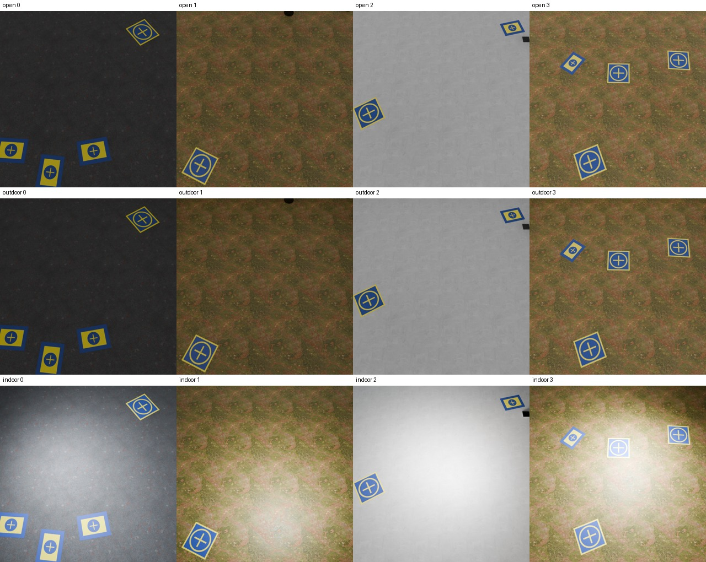

Four ordinary scenes per preset, twelve total, rendered at 640 × 640 and 32 samples with seed 20261109 and scene offset zero, from a frozen pre-final source bundle. Indoor lighting creates conspicuous bright pools and can wash out targets. The final source subsequently fits whole indoor emitters within room boundaries and omits indoor casters that cross them; these changes can alter indoor pixels; two final-source indoor examples are linked below. Its scene-offset seed correction does not affect this zero-offset sample.

Final-source indoor 000, native 640 px · Final-source indoor offset 3, native 640 px
Indoor scene 003, native 640 px · Outdoor scene 002, native 640 px · Methods, provenance, and limitations
Four scenes per preset do not establish realism, representative coverage, or detector performance.